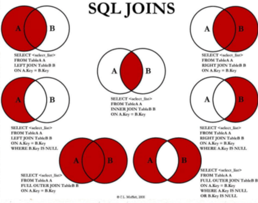

MySQL基础
MySQL是一种关系型数据库管理系统，关系数据库将数据保存在不同的表中，而不是将所有数据放在一个大仓库内，这样就增加了速度并提高了灵活性。MySQL所使用的 SQL 语言是用于访问数据库的最常用标准化语言。MySQL 软件采用了双授权政策，分为社区版和商业版，由于其体积小、速度快、总体拥有成本低，尤其是开放源码这一特点，一般中小型和大型网站的开发都选择 MySQL 作为网站数据库。MySQL5 支持事务、视图、存储过程、触发器等。
MySQL基础
DDL语句（数据定义语言 ）
库和表的管理
库的管理
1 | # 创建库 |
表的管理
1 | # 创建表 |
常见类型
整数型：一般采用int(11)、tinyint(4)、smallint(6)、mediumint(9)、bigint(20)
| 类型 | 描述 |
|---|---|
| tinyint(M) | 单字节，8位 0~255 |
| smallint(M) | 两字节，16位 -2^15 (-32,768) ~ 2^15 - 1 (32,767) |
| int(M) | 四字节，32位 -2^31 (-2,147,483,648) ~ 2^31 - 1 (2,147,483,647) |
| bigint(M) | 八字节，64位 -2^63 (-9223372036854775808) 到 2^63-1 (9223372036854775807) |
| varchar(N) | 字符，N最大可存储长度，超过部分会被忽略 |
字符串型：字符串实际数据长度N 0 < N < = 64 根据实际数据长度N，选择一个相近的2^n长度：varchar(8),varchar(16),varchar(32),varchar(64) 如：手机号11位，可以选择varchar(16)
1 bytes = 8 bit ,一个字节最多可以代表的数据长度是2的8次方 11111111 在计算机中也就是-128到127。
使用2 ^ n长度是更好的磁盘或内存块对齐。
对齐块更快。今天“块”的大小更大，内存和磁盘足够快，可以忽略对齐，对于非常大的块来说是非常重要的。 64 < N 根据实际数据长度N，选择一个相近的2^n-1长度：varchar(127),varchar(255),varchar(511)
收货地址接近100个字符，那么可以选择varchar(127)
商品名称，接近256个字符，可以选择varchar(255)
方便InnoDB建索引，对于 MyISAM，可以对前 1000 个字节做索引，对于 InnoDB，则只有 767 字节。（来源依据）。255X3=765
少申请一个字节，记录字符串长度，一个8位的tinyint，可以表示的无符号数值的范围是，0-255，如果长度超过了255，需要在申请个字节。
磁盘块和内存块对齐
varchar(N)长度并不是越长，越好，需要选择一个合适的长度。 在内存中的操作方式，varchar也是按照最长的方式在内存中进行操作的。比如说要进行排序的时候，varcahr(100)是按照100这个长度来进行的，不合理的长度会浪费内存空间。
常见约束
1 | NOT NULL |
DML语言（数据操纵语言）
插入
1 | insert into 表名(字段名，...) values(值1，...); |
字段类型和值类型一致或兼容，而且一一对应；
可以为空的字段，可以不用插入值，或用null填充；
不可以为空的字段，必须插入值；
字段个数和值的个数必须一致；
字段可以省略，但默认所有字段，并且顺序和表中的存储顺序一致。
修改
1 | # 单表 |
删除
delete语句
1 | # 单表 |
truncate语句
1 | truncate table 表名 |
truncate不能加where条件，而delete可以加where条件；
truncate的效率高一丢丢；
truncate删除带自增长的列的表后，如果再插入数据，数据从1开始；
delete删除带自增长列的表后，如果再插入数据，数据从上一次的断点处开始；
truncate删除不能回滚，delete删除可以回滚。
DQL语句（数据查询语言）
基础查询
1 | SELECT 要查询的东西 【FROM 表名】; |
类似于Java中 :System.out.println(要打印的东西);
通过select查询完的结果，是一个虚拟的表格，不是真实存在
要查询的东西 可以是常量值、可以是表达式、可以是字段、可以是函数
条件查询
根据条件过滤原始表的数据，查询到想要的数据
1 | select |
排序查询
1 | select |
常见函数
1 | 一、单行函数 |
分组查询
1 | select 查询的字段，分组函数 from 表 group by 分组的字段 |
可以按单个字段分组 ；
和分组函数一同查询的字段最好是分组后的字段 ；
分组筛选
| 针对的表 | 位置 | 关键字 | |
|---|---|---|---|
| 分组前筛选 | 原始表 | group by的前面 | where |
| 分组后筛选 | 分组后的结果集 | group by的后面 | having |
可以按多个字段分组，字段之间用逗号隔开
可以支持排序
having后可以支持别名
1 | # 每个部门人数都有了，那如果我们想要进一步知道员工人数大于30000的部门是哪些，这个时候就得用到HAVING了。 |
多表连接查询
笛卡尔乘积：如果连接条件省略或无效则会出现
解决办法：添加上连接条件
传统模式下的连接 ：等值连接——非等值连接
等值连接的结果 = 多个表的交集；
n表连接，至少需要n-1个连接条件；
多个表不分主次，没有顺序要求；
一般为表起别名，提高阅读性和性能。
sql99语法：通过join关键字实现连接

含义：1999年推出的sql语法
支持：
等值连接、非等值连接（内连接）；
外连接(左连接、右连接)；
如果左表的某行在右表中没有匹配行，则在相关联的结果集行中右表的所有选择列表列均为空值；
如果右表的某行在左表中没有匹配行，则将为左表返回空值。
1 | select 字段，... |
好处：语句上，连接条件和筛选条件实现了分离，简洁明了！
1 | # 所有有门派人员的信息（要求显示门派名称） |
自连接
案例：查询员工名和直接上级的名称
1 | # sql99 |
1 | # sql92 |
子查询
一条查询语句中又嵌套了另一条完整的select语句，其中被嵌套的select语句，称为子查询或内查询
在外面的查询语句，称为主查询或外查询。
特点
子查询都放在小括号内；
子查询可以放在from后面、select后面、where后面、having后面，但一般放在条件的右侧；
子查询优先于主查询执行，主查询使用了子查询的执行结果；
子查询根据查询结果的行数不同分为以下两类：
① 单行子查询
结果集只有一行
一般搭配单行操作符使用：> < = <> >= <=
非法使用子查询的情况：
a、子查询的结果为一组值
b、子查询的结果为空
② 多行子查询
结果集有多行
一般搭配多行操作符使用：any、all、in、not in
in： 属于子查询结果中的任意一个就行
any和all往往可以用其他查询代替
分页查询
实际的web项目中需要根据用户的需求提交对应的分页查询的sql语句
1 | select 字段|表达式,... |
特点
起始条目索引从0开始；
limit子句放在查询语句的最后
公式：select * from 表 limit（page-1）* sizePerPage,sizePerPage（每页显示条目数sizePerPage、要显示的页数page）
联合查询
1 | select 字段|常量|表达式|函数 [from 表] [where 条件] union [all] |
特点
多条查询语句的查询的列数必须是一致的；
多条查询语句的查询的列的类型几乎相同；
union代表去重，union all代表不去重。
1 | SELECT id,name,age,classid,score |
存储过程
含义：一组经过预先编译的sql语句的集合。
好处：提高了sql语句的重用性，减少了开发程序员的压力，提高了效率，减少了传输次数。
分类：
无返回无参；
仅仅带in类型，无返回有参；
仅仅带out类型，有返回无参；
既带in又带out，有返回有参；
带inout，有返回有参；
注意：in、out、inout都可以在一个存储过程中带多个。
1 | # 创建存储过程 |
参数前面的符号的意思
in:该参数只能作为输入 （该参数不能做返回值）；
out：该参数只能作为输出（该参数只能做返回值）；
inout：既能做输入又能做输出。
1 | # 学过的函数：LENGTH、SUBSTR、CONCAT等 |
函数和存储过程的区别
| 关键字 | 调用语法 | 返回值 | 应用场景 |
|---|---|---|---|
| 函数 | FUNCTION SELECT 函数() | 只能是一个 | 一般用于查询结果为一个值并返回时，当有返回值而且仅仅一个。 |
| 存储过程 | PROCEDURE CALL 存储过程() | 可以有0个或多个 | 一般用于更新。 |
三大范式
数据库的设计范式是数据库设计所需要满足的规范，满足这些规范的数据库是简洁的、结构明晰的，同时，不会发生插入（insert）、删除（delete）和更新（update）操作异常。
第一范式（1NF）列不可再分
每一列属性都是不可再分的属性值，确保每一列的原子性；
两列的属性相近或相似或一样，尽量合并属性一样的列，确保不产生冗余数据。
第二范式（2NF）属性完全依赖于主键
第二范式（2NF）是在第一范式（1NF）的基础上建立起来的，即满足第二范式（2NF）必须先满足第一范式（1NF）。第二范式（2NF）要求数据库表中的每个实例或行必须可以被唯一的区分。为实现区分通常需要为表加上一个列，以存储各个实例的惟一标识。这个惟一属性列被称为主键。
第三范式（3NF）属性不依赖于其它非主属性 属性直接依赖于主键
数据不能存在传递关系，即每个属性都跟主键有直接关系而不是间接关系。像：a–>b–>c 属性之间含有这样的关系，是不符合第三范式的。
比如Student表（学号，姓名，年龄，性别，所在院校，院校地址，院校电话）
这样一个表结构，就存在上述关系。 学号–> 所在院校 –> (院校地址，院校电话)
这样的表结构，我们应该拆开来，如下：
（学号，姓名，年龄，性别，所在院校）–（所在院校，院校地址，院校电话）
总结：三大范式只是一般设计数据库的基本理念，可以建立冗余较小、结构合理的数据库。如果有特殊情况，当然要特殊对待，数据库设计最重要的是看需求跟性能，需求>性能>表结构。所以不能一味的去追求范式建立数据库。
事务
事务四大特征
原子性： 本意是“不可再分”，事务的原子性表现为一个事务中涉及到的多个操作在逻辑上缺一不可。事务的原子性要求事务中所有操作要么执行，要么都不执行。
一致性： 是指数据的一致，指：所有数据都处于满足业务规则的一致状态。一致性原则要求：一个事务中不管涉及到多少操作，都必须保证事务执行之前数据是正确的的。如果一个事务在执行的过程中，其中某一个或某几个操作失败了，则必须将其他所有操作撤销，将数据恢复到事务执行之前的状态，这就是回滚。
隔离性： 在应用程序实际运行过程中，事务往往是并发执行的，所以很有可能有许多事务同时处理相同数据，因此每个事务都应该与其他事务隔离开来，防止数据顺怀。隔离性原则要求多个事务在并发执行过程中不会互相干扰。
持久性： 持久性原则要求事务执行完成后，对数据的修改永久的保存下来，不会因各种事务错误或其他意外情况而受到影响。通常情况下，事务对数据的修改应该比写入到持久化存储器中。
四种隔离级别
未提交读： 如果一个事务正在写数据则另外一个事务不允许同时进行写操作，但允许其他事务读此行数据，该隔离级别可以通过“排它锁”，但是不排斥读线程实现，这样就避免了更新丢失，却可能出现脏读，（事务B读取到了事务A未提交的数据）。
如果一个事务正在写数据则另外一个事务不允许同时进行写操作，但允许其他事务读此行数据，这样就避免了更新丢失，却可能出现脏读（指一个事务中访问到了另外一个事务未提交的数据）。
提交读： 写事务将会禁止其他事务访问该行数据，该隔离级别避免了脏读，但是可能出现不可重复读；如果一个读事务，则允许其他事务读写，如果事务A事先读取了数据，事务B紧接更新了数据，并提交了事务，而事务A再次读取该数据时，数据已经发生了改变(同一个事务中，多次读取到的数据不一致，如果事务A 按一定条件搜索， 期间事务B 删除了符合条件的某一条数据，导致事务A 再次读取时数据少了一条。这种情况归为 不可重复读)。
写事务将会禁止其他事务访问该行数据，该隔离级别避免了脏读，但是可能出现不可重复读（在一个事务内两次读到的数据不一样）；
可重复读： 在一个事务内，多次读同一个数据，在这个事务还没结束时，其他事务不能访问该数据（包括读写），这样就可以在同一个事务内两次读到的数据是一样的，因此称为是可重复读隔离级别。但是有可能会出现幻读（事务A 按照一定条件进行数据读取， 期间事务B插入了相同搜索条件的新数据，事务A再次按照原先条件进行读取时，发现了事务B新插入的数据）。
在一个事务内，多次读同一个数据，在这个事务还没结束时，其他事务不能访问该数据（包括读写），该隔离级别避免了不可重复读，但是有可能会出现幻读（一个事务读取2次，得到的记录条数不一致）（通俗地讲，就是使用相同的条件进行两次查询 , 第 1次查询和第 2次查询读出来的记录数不一样，原因就是另外一个事务新增或者删除了第一个事务结果集里面的数据）。
可序列化： 它要求事务序列化执行，事务只能一个接着一个地执行，不能并发执行，单单“行级锁”，无法实现序列化，必须通过其他机制保证新插入的数据不会被执行查询操作的事务访问到。序列化是最高事务隔离级别，但代价是最高，性能很低，一般很少使用。MySQL默认可重复读。
通过设置事务的隔离级别
READ UNCOMMITTED；
READ COMMITTED 可以避免脏读；
REPEATABLE READ 可以避免脏读、不可重复读和一部分幻读；
SERIALIZABLE可以避免脏读、不可重复读和幻读。
1 | # 设置隔离级别： |
MySQL怎么保证原子性的？
我们知道如果想要保证事务的原子性,就需要在异常发生时，对已经执行的操作进行回滚，在MySQL中，恢复机制是通过回滚日志（undo log）实现的,所有事务进行的修改都会先记录到这个回滚日志中，然后再执行相关的操作。如果执行过程中遇到异常的话,我们直接利用回滚日志中的信息将数据回滚到修改之前的样子即可！并且,回滚日志会先于数据持久化到磁盘上。这样就保证了即使遇到数据库突然宕机等情况,当用户再次启动数据库的时候,数据库还能够通过查询回滚日志来回滚将之前未完成的事务
视图
含义：理解成一张虚拟的表
视图和表的区别
| 使用方式 | 占用物理空间 | |
|---|---|---|
| 视图 | 完全相同 | 不占用，仅仅保存的是sql逻辑 |
| 表 | 完全相同 | 占用 |
视图的好处：sql语句提高重用性，效率高，和表实现了分离，提高了安全性。
1 | # 视图的创建 |
某些视图不能更新包含以下关键字的sql语句：分组函数、distinct、group by、having、union或者union all。
1 | # 常量视图 |